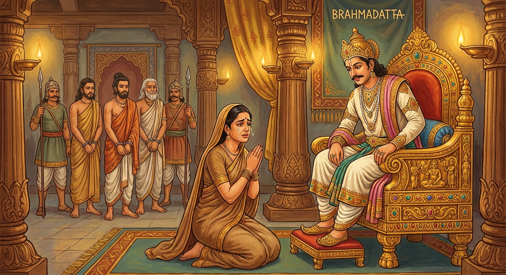

7. උච්ඡංග ජාතකය (67)
“උච්ඡඞ්ගෙ දෙව, මෙ පුත්තොති” යනාදී වශයෙන් ආරම්භ වන මේ ජාතක දේශනය බුදුරජාණන් වහන්සේ ජේතවනාරාමයේ වැඩ වසන
සමයෙහි, එක්තරා දනව් වැසි කාන්තාවක් අරබයා දේශනා කළහ.
එක් සමයක කොසොල් රට වැසි මිනිසුන් තිදෙනෙක් වනයක්
අසල සී සාමින් සිටියහ. එකල කැලෑවෙහි සිටි සොරු පිරිසක් මිනිසුන්ගේ වස්තුව පැහැරගෙන පලා ගියහ. සොරුන් ලුහුබැඳ ගිය
මිනිසුන්ට සොරුන් හමු නොවුණු අතර, සී සාමින් සිටි ස්ථානයට පැමිණි ඔවුහු, “තොපි වස්තුව පැහැරගෙන දැන් ගොවියන්
මෙන් සිටින්නහුදැ” යි පවසා, “මේ සොරු යැ” යි සැක කොට ඔවුන්ව බැඳගෙන අවුත් කොසොල් රජුට භාර දුන්හ.
ඉක්බිති
(ඔවුන්ගේ ඥාති) ස්ත්රියක අවුත් “මට හඳිනා වස්ත්රයක් දෙනු මැනව. මට හඳිනා වස්ත්රයක් දෙනු මැනව” යි මහත් සේ
හඬමින් නැවත නැවතත් රජ මැදුර අබියෙස හැසිරෙන්නට වූවාය. ඇගේ හැඬීම ඇසූ රජතුමා මැයට හඳිනා වස්ත්රයක් දෙන්නැ යි
නියෝග කළේය. ඇයට වස්ත්රයක් ගෙනැවිත් දුන් විට ඈ එය දැක, “මම මෙවැනි වස්ත්රයක් නො ඉල්ලමි. මම ස්වාමි වස්ත්රය
ඉල්ලමි” යි කීවාය. මිනිස්සු රජු වෙත ගොස් “මැය ඉල්ලන්නේ මේ වස්ත්රය නොවේ” යැයි දැන්වූහ. ඉක්බිති රජතුමා ඇය
ගෙන්වා, “තී ස්වාමි වස්ත්රයක් ඉල්ලන්නීදැ” යි ඇසීය. “එසේය, දේවයිනි, ස්ත්රියකට හිමියා වස්ත්රයක් වැනිය.
හිමියා නැති කල්හි දහසක් වටිනා වස්ත්රයක් ඇන්දත් ස්ත්රිය නිරුවත් වන්නීය.” මේ කරුණ සනාථ කරනු සඳහා—
“දිය නැති ගඟ නිරුවත් ය. රජකු නැති රට නිරුවත් ය. සොහොයුරන් දස දෙනෙකු සිටිය ද (සැමියා නැති) වැන්දඹු ස්ත්රිය ද නිරුවත් ය.”
ඇය (තම මතය තහවුරු කිරීමට) මෙම ගාථාව ගෙනහැර දැක්වූවාය.
කොසොල් රජතුමා ඇය කෙරෙහි පැහැදී, “මේ තිදෙනා තීගේ කවුරුන් ද?” යි ඇසීය. “දේවයිනි, එක් අයෙක් මගේ සැමියා ය; එක්
අයෙක් සොහොයුරා ය; අනෙක් තැනැත්තා මගේ පුත්රයා ය.” රජතුමා, “මම තී කෙරෙහි පැහැදුණෙමි. මේ තිදෙනාගෙන් එක් අයෙකු
තීට දෙමි. තී කවරෙකුට කැමති ද?” යි විචාළේය. “දේවයිනි, මම ජීවත් වුවහොත් තවත් සැමියෙකු ලබා ගත හැක. පුතෙකු ද
ලැබිය හැක. එහෙත් මව්පියන් මළ බැවින් සොහොයුරෙකු ලැබිය නොහැකිය. එම නිසා මට සොහොයුරා දෙනු මැනවැ” යි ඇය ඉල්ලා
සිටියාය. රජතුමා සතුටට පත්ව තිදෙනාම නිදහස් කළේය. මෙසේ එක් කාන්තාවක් නිසා තිදෙනෙක් දුකින් මිදුණාහ.
මේ
සිද්ධිය භික්ෂූන් අතර ප්රකට විය. දිනක් දම්සභා මණ්ඩපයේ රැස්වූ භික්ෂූන් වහන්සේලා, “ඇවැත්නි, එක් කාන්තාවක් නිසා
තිදෙනෙක් දුකින් මිදුණාහු යැ” යි ඇගේ ගුණ කියමින් සිටියහ. බුදුරජාණන් වහන්සේ එතැනට වැඩම කර, “මහණෙනි, දැන් කිනම්
කථාවකින් යුතුව සිටියාහු ද?” යි විචාරා, “මේ නම් කථාවෙන් යැ” යි කී කල්හි, “මහණෙනි, මේ කාන්තාව මේ තිදෙනා දුකින්
මුදා ගත්තේ දැන් පමණක් නොවේ. පෙර ද දුකින් මුදා ගත්තා යැ” යි වදාරා අතීත කථාව ගෙනහැර දැක්වූහ.
අතීතයේ බරණැස් නුවර බ්රහ්මදත්ත රජු රාජ්යය කරන සමයෙහි තිදෙනෙක් වන අබියෙස සී සාමින් සිටියහ (මේ සියලු විස්තරය
පූර්වයේ දැක්වූ පරිදි ම වේ).
එදා රජතුමා, “තිදෙනාගෙන් කවරෙකුට කැමති ද?” යි ඇසූ කල්හි ඒ ස්ත්රිය,
“දේවයිනි, තිදෙනාම ලබා දිය නොහැකි ද?” යි ඇසුවාය. “එසේය, නොහැක්කෙමි.” “ඉදින් තිදෙනාම දීමට නොහැකි නම්, මගේ
සොහොයුරා දෙනු මැනවි.” “නැත, පුත්රයා හෝ හිමියා ලබා ගනු. සොහොයුරාගෙන් ඇති ඵලය කුමක් ද?” යි රජු කී කල්හි,
“දේවයිනි, මේ දෙදෙනා (සැමියා සහ පුතා) පහසුවෙන් ලබාගත හැකිය. නමුත් සොහොයුරෙකු එසේ ලබාගත නොහැකිය,” යි පවසා ඇය
මෙම ගාථාව කීවාය:
“දේවයිනි, පුත්රයා මගේ ඇකයෙහි ය. මඟ තොටේ යන විට මට සැමියෙකු ද හමුවනු ඇත. එහෙත් යම් තැනකින් සහෝදරයෙකු උපදී නම්, මම ඒ ස්ථානය (මව් කුස) නො දකිමි.”
එහි අර්ථය මෙසේය: “උච්ඡඞ්ගෙ දෙව මෙ පුත්තො” යනු, දේවයිනි, මගේ පුත්රයා ඇකයෙහි ම ය. යම් සේ වනයට ගොස් පලා නෙළා ඉණෙහි (ඇකයෙහි) ලා ගන්නා තැනැත්තියකට පලා සුලභ වන්නා සේ, ස්ත්රියකට දරුවන් ද එසේ ම සුලභ ය. “පථෙ ධාවන්තියා පති” යනු, මඟට බැස හුදකලාව ගමන් කරන ස්ත්රියකට හිමියෝ සුලභ ය. දකින දකින පුරුෂයා හිමියා කරගත හැකිය. එනිසා මඟ යන විට පුරුෂයන් සුලභ යැයි කියන ලදී. “තඤ්ච දෙසං න පස්සාමි යතො සොදරියමානයෙ” යනු, යම් හෙයකින් මගේ මව්පියන් නැද්ද, එහෙයින් සහෝදරයෙකු ගෙන්වා ගත හැකි (උපදින) ඒ මව් කුස නම් වූ අන් ස්ථානයක් මම නොදකිමි. මා හා එක කුසෙහි උපන් සොහොයුරා නැවත ලබා ගත නොහැකි බැවින්, මට සොහොයුරා ව ම දෙනු මැනවි.

රජතුමා “මැය සත්යයක් ම පවසයි” යි සතුටු වී, (සිරභාරයේ සිටි) මිනිසුන් තිදෙනා ම බන්ධනාගාරයෙන් ගෙන්වා නිදහස් කර දුන්නේය. ඈ ඒ තිදෙනා ම රැගෙන ගියාය.
බුදුරජාණන් වහන්සේ ද, “මහණෙනි, මේ ස්ත්රිය දැන් පමණක් නොව පෙර ද මේ තිදෙනා දුකින් මුදා ගත්තා යැ” යි මෙම ධර්ම දේශනාව ගෙනහැර දක්වා, පූර්වාපර සන්ධි ගළපා ජාතකය නිම කළ සේක. “එකල ඒ සිව්දෙනා (ස්ත්රිය සහ මිනිසුන් තිදෙනා) දැන් මේ සිව්දෙනා ම ය. එකල රජ වී සිටියේ මම ම වෙමි.”
උච්ඡංග ජාතක වර්ණනාව සත්වැනියි.